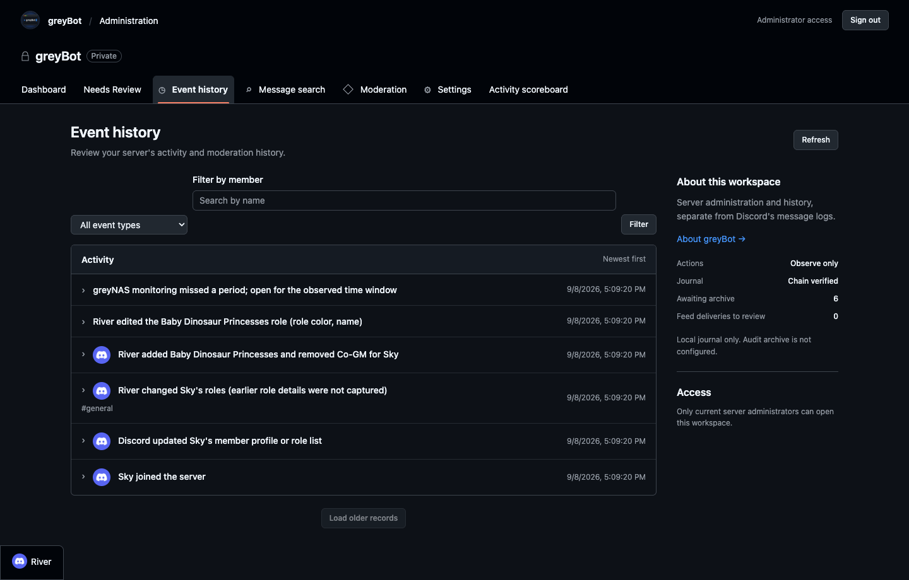
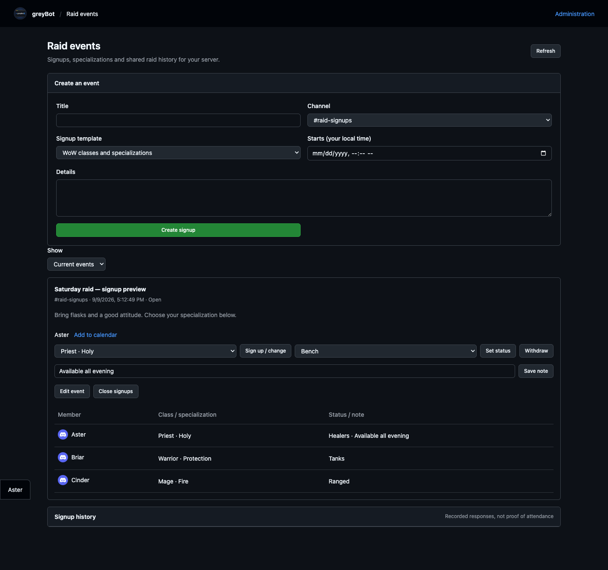
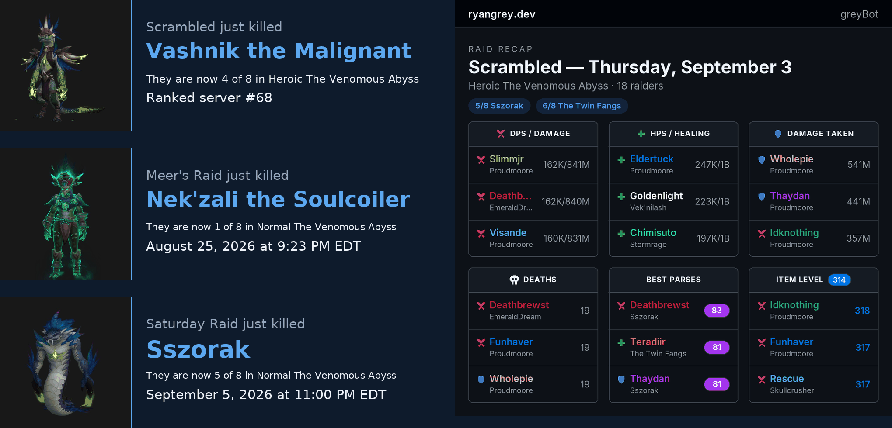

Ryan Grey
AWS-certified systems professional with 10 years in healthcare operations supporting $1B+ in annual billing across 13 hospitals. Builds serverless AWS applications, monitoring, secure CI/CD and native macOS and iOS applications.
Technical Skills
Cloud & Operations
Security & Delivery
AI & Development
Data & Systems
GitHub Activity
Projects
This Website
Registered domain transferred from GoDaddy to Route 53 (including tearing down a stale DNSSEC chain — DS records deleted at the .dev registry before the nameserver cutover, so resolution never broke). Hosted from S3, fronted by CloudFront with a free ACM certificate. The .dev TLD is HSTS-preloaded, so every connection is HTTPS by force.
- Keyless CI/CD — OIDC-federated deploys, no stored credentials; every deploy verified byte-for-byte against its rendered page, with stack and contribution checks before deployment credentials are assumed
- Security headers at the edge — the homepage permits scripts and data requests only from this site; inline scripts and third-party code remain blocked
- Self-testing monitoring — alarm → SNS → Lambda → SES, with a monthly heartbeat that shares no failure modes with the path it tests
Full write-ups and infrastructure code on GitHub →
Delivery & Monitoring Pipeline
Push-to-main deploys assume a least-privilege IAM role through OIDC federation with zero stored AWS keys, then verify the live page byte-matches the rendered deployment output. GitHub’s undocumented immutable-ID subject claims were diagnosed by decoding the runner’s own JWT.
- Deployment checks — the stack manifest is checked before AWS credentials are assumed; live page assets and deployed content are verified after publication
- Security headers at the edge — CloudFront Functions allow the homepage’s own contribution tracker while blocking inline scripts, third-party code, and external data requests
- Mail that actually arrives — a CloudFront 5xx alarm routed through Lambda to SES, signing DKIM as ryangrey.dev via Route 53, so DMARC passes on DKIM alignment where SPF cannot align; built after tracing silent drops to a provider accepting mail and discarding it
- Monitoring that tests itself — an EventBridge Scheduler heartbeat force-fires that alarm monthly through a path sharing no failure modes with the pipeline it tests, behind an AWS Budgets guardrail
Full write-ups and infrastructure code on GitHub →
GreyScale — Family Weigh-In on iOS
A shared spreadsheet had been scoring a four-person family’s weekly weigh-ins since May, and its computed columns had already gone stale. GreyScale replaces it: a SwiftUI app on everyone’s phone over a serverless backend, designed, built and shipped solo. Single-table DynamoDB reached only by Query on the partition key — there is no Scan in the code, and none granted in the IAM policy either. It has since grown a calorie tracker with five ways in: typed, barcode, database search, a photograph of the plate read by Bedrock, and a Nutrition Facts panel read on the phone itself.
- Nothing derived is ever stored — the table holds a weight and a date; every weekly loss, running total and pass/fail verdict is recomputed from raw weights. A later “rewind to any past week” feature then cost almost nothing to build: showing week 5 is scoring the same rows with the later ones removed, so there is no historical snapshot that can drift out of step
- Every write is pinned to its author — no endpoint accepts a member id, not the weigh-in, the photo or the profile badges. The row key always derives from the verified token’s username claim, so tampering has nothing to aim at
- Rejected before the code runs — an API Gateway JWT authorizer turns away unauthenticated calls, and the handler then re-checks token_use independently, because ID and access tokens are signed by the same pool and only one of them is meant to be a bearer credential. Sign-in is Authorization Code with PKCE on a public client holding no secret
- Unknown never renders as zero — a photographed meal is uploaded straight to S3 on a presigned URL, fanned through EventBridge and SQS to a second Lambda with its own role, and read by Bedrock Nova Lite. The card appears first, contributing nothing until an answer lands; a failure shows as failed with a retry, never as a meal worth no calories. The model’s output is gated on food, confidence and plausibility before it is believed — fed the app’s own icon it had confidently returned “Food, 100 kcal”
- Not everything needs a model — a Nutrition Facts panel is printed text, so it is read on the device by Vision instead: no upload, no queue, no per-use cost and an answer in under a second. Rendering a realistic panel and running the real recogniser over it exposed a bug no hand-written test had — the figure can be returned above the word “Calories”, not below
- The interesting number is derived, not recorded — true maintenance is back-solved from intake against what the scale actually did, over every window of three weeks or more, with the longest as the headline. Short windows are refused on principle: on real data a one-week back-solve returned 3,488 cal/day against a true figure near 2,550, which is not merely wrong but confidently wrong
- Checked against what it replaced, not against itself — the test suite asserts the app reproduces every weekly and running total the original spreadsheet computed, restates each verdict independently, and re-derives seven published weekly averages from the log it inherited. It runs without Xcode or a simulator, so the part most worth being right about is verifiable before the project will even open. Views are rendered offline to PNG and looked at — every view checked that way had a bug the render caught
Delivered on a split toolchain. macOS 27 refused to launch the release Xcode at all, so archive, code signing and export ran headlessly through xcodebuild, with a second Xcode installed alongside solely for account setup and upload — builds stayed on the release toolchain because App Store Connect rejects binaries built with beta tooling.

Cloud Watchtower — macOS Menu-Bar Monitor
A native menu-bar app that answers two questions at a glance: is the site healthy, and what is it costing? CloudFront traffic and error rates, CloudWatch alarm state, and month-to-date spend against the budget. The menu-bar glyph encodes health, so the panel only needs opening when something is actually wrong.
- No dependencies at all — the AWS SDK for Swift is a 2.3 GB repository, so request signing is written directly instead: AWS SigV4 in about a hundred lines of CryptoKit, covering both the Query/XML and JSON wire protocols
- Cost is a design constraint — Cost Explorer bills per request, so it never runs on a timer and sits behind a button labelled with its own price; batching every metric into a single call brings the monitor to ~$0.12/month against roughly $8.50 for a poll-everything build — over 60× cheaper
- Least privilege — it assumes a scoped read-only role on one-hour STS credentials rather than holding the deploy key, and proves which identity it resolved instead of trusting the config
- Degrades honestly — a failed refresh keeps the last good value with the failure named and its age stated, and the glyph has a third state, because “cannot reach AWS” is not the same as healthy
Caught all four alarm state transitions on its first live test. Then it earned its keep immediately — it surfaced a sustained 4xx error rate that the existing 5xx-only alarm was structurally unable to see, traced to a missing favicon returning 403 from the origin and fixed the same day. It kept earning it: the panel below still reads about 32%, which is the same signal saying the favicon was one instance of a general fault. An S3 origin behind an origin access control returns 403, not 404, for anything absent — so every automatic request for a file that was never there, robots.txt and sitemap.xml included, counted against the rate. Both now exist. What is left is unsolicited probing for things like /wp-login.php, which should be refused — the honest target for this number is not zero.

greyBot — Discord Administration & Raid Operations
Built a Discord operations platform spanning server administration, moderation, member verification, raid signups and searchable guild history. Persistent Docker services run the administrator website and event collector, while AWS Lambda and EventBridge handle raid announcements and recap generation for three teams.
- Authorization on every private request — Discord OAuth identifies the administrator, then live guild permissions determine access. Moderation requests recheck permissions and role hierarchy; session, CSRF and origin checks protect the web controls
- Searchable history with explicit limits — a SQLite message index and hash-chained event journal support named member/channel filters, role changes and moderation review. Capture gaps remain visible; the journal is tamper-evident, not a claim of immutable or complete history
- Membership and moderation workflows — verification, controlled role assignment, timeout/kick/ban requests, persistent mutes and configurable spam handling share an administrator interface. Member channel preferences can hide eligible channels without granting new access
- Raid signups and reporting — members choose classes, specializations and attendance status; organizers review rosters and past responses. Scheduled reporting publishes first-kill cards and per-night recaps, with conditional-write claims to prevent overlapping runs from posting the same announcement
- One source, distinct runtime boundaries — the consolidated release contains the Docker service, AWS raid runtime and local MCP reader integrations. Personal desktop captures remain local and outside hosted guild search
Deployed as a hybrid Docker and AWS application, with regression checks for authorization, history handling, local integrations and raid reporting. Public project information is separate from the administrator-only dashboard; automation settings and event coverage are tracked explicitly.

{kind=link}

{kind=link}

Multi-Client MCP Integrations — Claude & Codex
Adapted the Messages, Contacts, GreyScale and Discord integrations to work across Claude Desktop, Claude Code and Codex. A shared configuration layer connects each client to the same server implementations and virtual environments, so adding another client does not require a separate fork of each server.
- One definition, consistent registrations — a credential-free manifest drives a Python synchronizer that previews drift, backs up affected settings, preserves unrelated entries and verifies the registrations after applying changes
- Parallel sessions, explicit boundaries — independent clients initialize the servers and enumerate their tools concurrently; read probes verify access separately from a successful connection, without claiming that simultaneous writes have been certified
- Permissions stay with the host — existing write-confirmation gates remain in place, GreyScale exposes read-only tools, and macOS permissions still govern Messages and Contacts access from each hosting application
All twelve registrations match the shared definitions, and repeat synchronization reports no drift. The same integrations can be used from either assistant without maintaining separate server code.
imessage-mcp — Apple Messages & Contacts for Claude & Codex
Local MCP servers for Claude and Codex to search, read and send Apple Messages, and manage Apple Contacts — list, dedupe, merge, and move cards between accounts — subject to the hosting application’s macOS permissions. Everything stays on the machine: the message database is opened strictly read-only, sending goes through Messages.app itself, contacts go through Apple’s own framework, and there is no code path that touches the network.
- Read-only by construction — chat.db is opened with SQLite’s mode=ro&immutable=1, which takes no locks at all, so a query can never block Messages.app; nothing under the Messages directory is ever written
- The text isn’t where it says it is — modern macOS leaves the text column NULL and stores the body only as an archived attributed string, so bodies are decoded from the typedstream blob, and a status tool reports how often that decode is actually working rather than letting search silently return empties
- Search that doesn’t rescan history — decoded text feeds a local SQLite FTS5 index rebuilt incrementally by ROWID, so the first search pays for the backlog once and every later one indexes only the delta
- Sending is deliberately harder than reading — a send refuses without an explicit confirm flag, goes through Messages.app via AppleScript rather than any private API, and every attempt lands in a local audit log
- Contacts through the front door — the Contacts server drives CNContactStore via PyObjC, the same path Contacts.app uses, never the AddressBook SQLite underneath; every write is confirm-gated and logged with the full before/after card, and the iCloud container is resolved structurally rather than as “the default account”, so a merged or moved card can never silently land in the wrong service
Tests run against a fully synthetic fixture database and an in-memory fake of the Contacts layer, because the honest way to publish a tool that reads your texts and your address book is a repository that provably contains neither.
discord-mcp — Discord for Claude & Codex, with provenance
Discord’s API does not let one thing see everything. A bot sees only the servers it has been invited to and can never read direct messages; the only way around that is automating your own user account, which Discord bans. So this is a local MCP server that combines the sources that are allowed — a bot, the official data-request export, and a capture-only client plugin — into one SQLite FTS5 index, tags every row with where it came from, and refuses cleanly wherever no compliant path exists.
- Three sources, one row per message — the message’s snowflake id is the primary key, so a message seen by two sources exists once and the fuller source wins (bot over capture over export); re-importing the export, re-syncing the bot, or restarting a backfill is idempotent by construction, not by bookkeeping
- Writes only where the bot can act — send, edit and delete work as the bot, require an explicit confirm flag, log before-and-after to an audit file, and refuse a channel known only from the export or capture sources with a message that says why: there is no permitted way to write as yourself
- The silent failure made loud — a bot without the Message Content intent connects fine and indexes every message as empty text, so the status tool reads the intent flag off the application itself and the sync warns when nearly every fetched row comes back blank
- Honest about the export — Discord’s data package contains only the messages you sent, not the replies; the README carries the coverage table saying which combination of sources can and cannot reach each kind of message, rather than implying completeness
- The capture side never sends — the companion Vencord plugin listens to the client’s own message events and appends them to a file from Electron’s main process; a launchd job folds that into SQLite with a change counter so edits and deletions flow through too. Its one opt-in step past passive capture — a paced page-by-page backfill of a conversation, with a time-based ETA, a persisted resume point, and a main-process timer so a minimized window keeps pace — is documented as exactly that, alongside the client-modification risk it carries
First real run indexed 103,730 messages across 35 channels in one evening. The repository contains none of them: fixtures are synthetic, the bot token lives in SSM Parameter Store and is never written to disk by the code, and the tests assert that a second import adds nothing.
Experience
Resale business across eBay and Facebook Marketplace — market-comp research, pricing strategy, listing copy, and negotiation across 40+ concurrent listings. Computer science coursework (Franklin University) and Sabio full-stack bootcamp training undertaken concurrently.
Managed 3 direct reports with oversight of 18 coders; improved KPI performance across Epic, Cerner, SMS Envision and 3M platforms while maintaining HIPAA/PHI compliance; streamlined data collection and reporting behind $1B+ in annual billing across 13 hospitals by authoring standardized templates and centralized dashboards.
Sole support for six revenue-cycle systems (PayNav, Audit Logix, SharePoint, Chargemaster, US Bank, SCI); built the front-end revenue-cycle dashboard reported daily to CFOs; designed and built the department's precertification tracking database in Microsoft Access — front and back end, used by 40+ staff — and ran it in production with monthly backups, with its reports going directly to executive leadership.
Registration and insurance eligibility (Medicare, Medicaid, BCBS) for up to 100 patients daily; trained new team members across facilities during software launches.